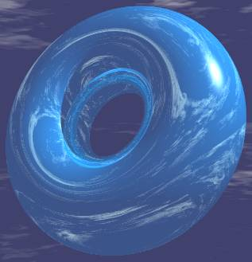
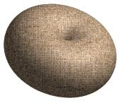
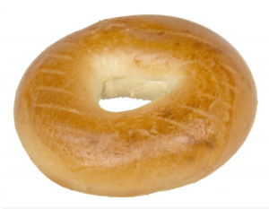
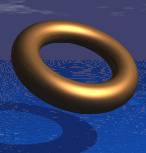
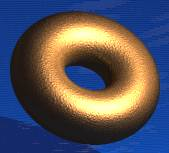

Torus
Go to Surface Area or Volume
A torus is a fascinating 3D shape that looks like a donut or swim ring. It is created by revolving a smaller circle around a larger one.

Notice these interesting things:
- It is formed by rotating a
small circle (radius r) along the radius
of an invisible larger circle (radius R) - It has no edges or vertices
- It is not a polyhedron as it has a curved surface

Torus in the Sky.
The Torus is such a beautiful solid,
this one would be fun at the beach!
Surface Area
| Surface Area | = (2πR) × (2πr) |
| = 4 × π2 × R × r |
Which is usually written in this shorter way:
Surface Area = 4π2Rr
Example: r = 3 and R = 7
Volume
| Volume |
= (2πR) × (πr2) |
| = 2 × π2 × R × r2 |
Which is usually written in this shorter way:
Volume = 2π2Rr2
Example: r = 3 and R = 7
Note: Area and volume formulas only work when the torus has a hole!
Like a Cylinder
Volume: the volume is the same as if we "unfolded" a torus into a cylinder (of length 2πR):

As we unfold it, what gets lost from the outer part of the torus is perfectly balanced by what gets gained in the inner part.
Surface Area: the same is true for the surface area, not including the cylinder's bases.


And did you know that Torus was the Latin word for a cushion?(This is not a real roman cushion, just an illustration I made)
The Volume and Area calculations will not work with this cushion because there is no hole.
When we have more than one torus they are called tori
More Torus Images

A Bagel is like a torus
Life ring (buoy)
As the small radius (r) gets larger and larger, the torus goes from looking like a Tire to a Donut:

